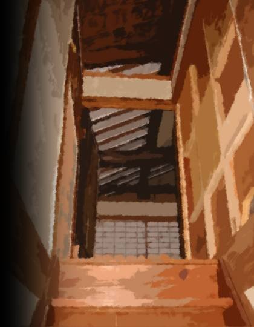
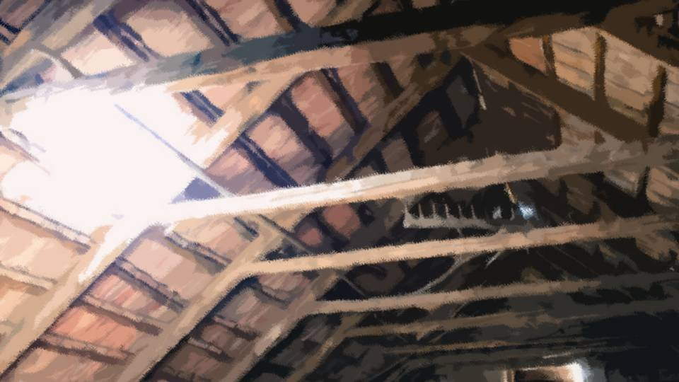
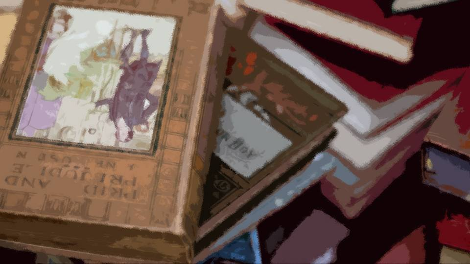
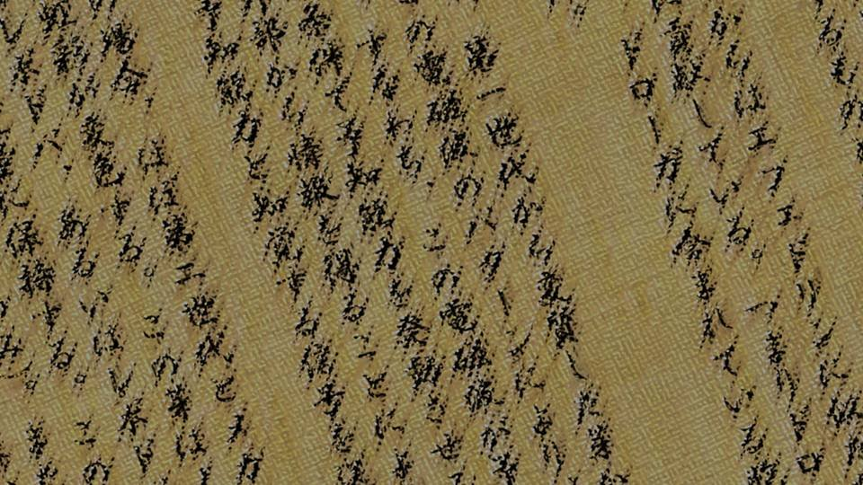
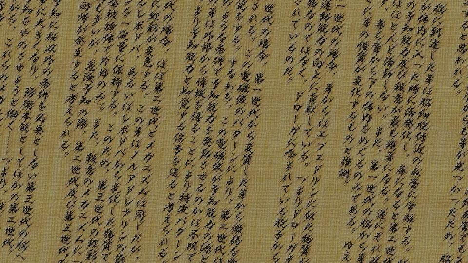

Green Eyes ~Dormant~
The code―0723, which reads 'na-tsu-mi'.
To think the number Grandma gave me spelled out Natsumi Kogori's name.
Only a handful of people, even within the Niimura family, know it.
To hit on it by guesswork, you'd have to know both the Niimura family and the Kogori family, and be very lucky besides.
To think the number Grandma gave me spelled out Natsumi Kogori's name.
Only a handful of people, even within the Niimura family, know it.
To hit on it by guesswork, you'd have to know both the Niimura family and the Kogori family, and be very lucky besides.
All of the Arata settlement is here.
Our ancestor, the Emperor's son (not by direct blood, apparently), took the name Niimura, and the history from then on is written down here, they say.
Our ancestor, the Emperor's son (not by direct blood, apparently), took the name Niimura, and the history from then on is written down here, they say.
I have to dig the promising ones out of all these books.
Most of them were written in classical Japanese or foreign languages.
Most of them were written in classical Japanese or foreign languages.
I'd brought dictionaries for translating, too, borrowed from the university library.
I don't know the grammar well, but if I follow along word by word, I should at least be able to make out the titles... in theory.
I don't know the grammar well, but if I follow along word by word, I should at least be able to make out the titles... in theory.
I checked the title of every book, one by one.
Flipping back and forth between the Japanese-Portuguese dictionary and the classical Japanese dictionary, I picked out anything that looked even roughly useful.
This one was... how to cook Arata's wild plants.
That one was how to make a nata.
Stuff like this is no use, surely.
Even if something important is written in them, I don't have time to weigh it.
I have to be ruthless about what to keep and what to cut.
Flipping back and forth between the Japanese-Portuguese dictionary and the classical Japanese dictionary, I picked out anything that looked even roughly useful.
This one was... how to cook Arata's wild plants.
That one was how to make a nata.
Stuff like this is no use, surely.
Even if something important is written in them, I don't have time to weigh it.
I have to be ruthless about what to keep and what to cut.
If it comes to that, it seems Goto-chan will lend me a hand.
I'll send Goto-chan photos of the books and have her decipher them.
Since this would mean leaking Arata's secrets outside, it probably goes against the rule.
That's why I haven't told Grandma or Dad about it.
I'll send Goto-chan photos of the books and have her decipher them.
Since this would mean leaking Arata's secrets outside, it probably goes against the rule.
That's why I haven't told Grandma or Dad about it.
The only ones who know are Goto-chan, Auntie, and Haruka.
Earlier, I'd told Haruka over the phone what was going on.
As I'd expected, Haruka couldn't believe it either, but with Auntie and even Goto-chan taking action, she must have had no choice but to accept it.
Earlier, I'd told Haruka over the phone what was going on.
As I'd expected, Haruka couldn't believe it either, but with Auntie and even Goto-chan taking action, she must have had no choice but to accept it.
When I talked to Haruka, she pointed out something odd.
That it made no sense for me to have been working toward solving the curse-killings all along, while believing I was the culprit.
True, that's a contradictory way to act.
That it made no sense for me to have been working toward solving the curse-killings all along, while believing I was the culprit.
True, that's a contradictory way to act.
What bothers me is what came after the curse-killings by my own hand stopped.
Killings I had been carrying out with my own hands, taken over by someone else without my ever intending it... that's nothing but creepy.
And yet catching that real culprit means that sooner or later I'll come under suspicion too.
Killings I had been carrying out with my own hands, taken over by someone else without my ever intending it... that's nothing but creepy.
And yet catching that real culprit means that sooner or later I'll come under suspicion too.
Why was I acting in such a contradictory way?
Could it be that, without realizing it, I knew I wasn't the culprit?
And why had I been so convinced I was the culprit in the first place?
Wasn't there something that set it off...?
Could it be that, without realizing it, I knew I wasn't the culprit?
And why had I been so convinced I was the culprit in the first place?
Wasn't there something that set it off...?
Well, for now, gathering information comes before deduction.
Goto-chan will probably explain things to Natsumi-chan, but when that happens, she'll have to be sworn to strict silence.
Sadly, that means the only people I trust are the ones who live in Motoki-cho.
I can't trust the people of this Arata settlement, not even my own family.
Goto-chan will probably explain things to Natsumi-chan, but when that happens, she'll have to be sworn to strict silence.
Sadly, that means the only people I trust are the ones who live in Motoki-cho.
I can't trust the people of this Arata settlement, not even my own family.
This is only a hunch of mine, but I can't believe these curse-killings are solely the work of the 'someone' Goto-chan talked about.
Human hands must be involved somewhere.
Because the method is exactly the way a human would do it.
Human hands must be involved somewhere.
Because the method is exactly the way a human would do it.
In other words, there is someone who has sold their soul to the 'someone'.
There is definitely a traitor inside this settlement.
That's why I won't trust anyone, not even my family.
After all, relying on the people close to me has never solved anything up to now.
There is definitely a traitor inside this settlement.
That's why I won't trust anyone, not even my family.
After all, relying on the people close to me has never solved anything up to now.
Well, that should do it. I've just about finished picking out the books.
I'll move to the work space on the second floor.
If I open the window, the air's better there than down here.
I'll move to the work space on the second floor.
If I open the window, the air's better there than down here.

The books I chose fall into three broad kinds.
・Writings on the Green-Eye Curse-Killing
・The history of this land
・The Droga research report
・Writings on the Green-Eye Curse-Killing
・The history of this land
・The Droga research report
I'd like to read the Droga research report first, but I'll start with the writings on the Green-Eye Curse-Killing.
I'll pick out the parts of those writings that are hard for me to read and send photos to Goto-chan.
While Goto-chan deciphers them, I'll read the research report written in modern Japanese.
That way the two of us work on separate tasks at the same time, which is efficient.
I'll pick out the parts of those writings that are hard for me to read and send photos to Goto-chan.
While Goto-chan deciphers them, I'll read the research report written in modern Japanese.
That way the two of us work on separate tasks at the same time, which is efficient.

"Phew..."
At last I'd carried all the books in, and I took a breather.
I hadn't made any progress on the investigation yet, but I already felt like I'd accomplished something.
It was 10 p.m.
Picking out the books and hauling them alone had eaten up two hours.
At last I'd carried all the books in, and I took a breather.
I hadn't made any progress on the investigation yet, but I already felt like I'd accomplished something.
It was 10 p.m.
Picking out the books and hauling them alone had eaten up two hours.
There isn't much time left before the thirteenth-year memorial service.
By April 8 I will finish the research, report to Goto-chan, and uncover the truth of the curse-killings.
This is about the only time outsiders can come into the settlement openly.
Especially lately, the curse-killings have put the people of the settlement even more on their guard.
By April 8 I will finish the research, report to Goto-chan, and uncover the truth of the curse-killings.
This is about the only time outsiders can come into the settlement openly.
Especially lately, the curse-killings have put the people of the settlement even more on their guard.

Now then, the book on the Green-Eye Curse-Killing...
I studied classical Japanese plenty for my entrance exams, but as I expected, I've forgotten almost all of it.
I studied classical Japanese plenty for my entrance exams, but as I expected, I've forgotten almost all of it.
It's not fair to dump it all on Goto-chan, so I'll photograph the parts that look important.
If that's not enough, Goto-chan should ask for the pages before and after.
If that's not enough, Goto-chan should ask for the pages before and after.
Okay, once I've sent all the photos, it's on to the research report.
Actually, there's something I've wondered about since before I even read this report.
The organization doing the research took the Arata settlement's cherry trees away.
In exchange, the Grand Witch of the time negotiated for them to hand over the report.
I'm amazed she managed a negotiation like that.
Actually, there's something I've wondered about since before I even read this report.
The organization doing the research took the Arata settlement's cherry trees away.
In exchange, the Grand Witch of the time negotiated for them to hand over the report.
I'm amazed she managed a negotiation like that.
You'd think they'd refuse to hand over a report like that. Did she have something on them?
Or was there something that would go badly for them if they didn't do what the people of the Arata settlement said...?
And how did outsiders learn about Droga in the first place?
Or was there something that would go badly for them if they didn't do what the people of the Arata settlement said...?
And how did outsiders learn about Droga in the first place?
Well, there's no point imagining things like that.
Let me take a look inside right away.
Let me take a look inside right away.

It seemed to be more thorough research than I'd expected.
It was a horrible thing, but it set out the results of the Droga human experiments.
It was a horrible thing, but it set out the results of the Droga human experiments.
Descriptions of the first through fourth generations―
The first generation: those who used Droga directly.
The second generation: those whose head mucous membranes came into contact with a certain amount of a first-generation person's blood right after bleeding.
The third generation: those whose head mucous membranes came into contact with a certain amount of a second-generation person's blood right after bleeding.
The fourth generation: thought to exist, but its traits unknown.
The first generation: those who used Droga directly.
The second generation: those whose head mucous membranes came into contact with a certain amount of a first-generation person's blood right after bleeding.
The third generation: those whose head mucous membranes came into contact with a certain amount of a second-generation person's blood right after bleeding.
The fourth generation: thought to exist, but its traits unknown.
The first generation: gains extraordinary strength and dynamic vision, for a short time only.
The second generation: gains precognition under certain conditions.
The third generation: gains precognition where there are cherry trees, and one eye turns green.
In addition, girls who have had their first period, and boys as well when bleeding beyond a certain amount, feel an unbearable urge to kill the second and third generations.
The fourth generation and beyond: unknown.
The second generation: gains precognition under certain conditions.
The third generation: gains precognition where there are cherry trees, and one eye turns green.
In addition, girls who have had their first period, and boys as well when bleeding beyond a certain amount, feel an unbearable urge to kill the second and third generations.
The fourth generation and beyond: unknown.
Going by this, Mom was second generation, and Kana and I are third generation.
Which means that once Kana has her first period, we...
Knowing that much alone makes it useful information.
And I'm the proof that there's a way to cure that urge to kill.
Which means that once Kana has her first period, we...
Knowing that much alone makes it useful information.
And I'm the proof that there's a way to cure that urge to kill.
Kana and I probably became third generation because we touched Mom's blood when we were born.
Then who on earth is the first generation...
I'll leave off working that out.
For now, gathering information comes before thinking.
Then who on earth is the first generation...
I'll leave off working that out.
For now, gathering information comes before thinking.
―The report was split into several volumes, and nearly all of it was results of human experiments.
Detailed measurements of the physical abilities Droga gives, the range of the precognition.
And the process by which the third generation comes to feel the urge to kill, among other things, all written up in minute detail.
In the end, because of its side effects and how hard it made controlling one's strength, Droga was apparently never put to practical use.
Detailed measurements of the physical abilities Droga gives, the range of the precognition.
And the process by which the third generation comes to feel the urge to kill, among other things, all written up in minute detail.
In the end, because of its side effects and how hard it made controlling one's strength, Droga was apparently never put to practical use.
There was one report left―
before I knew it, it was already 1 a.m.
Once I've looked this one over, maybe I'll go to bed...
The information so far gives me no clue for preventing the curse-killings.
The investigation has only just begun.
Once I've looked this one over, maybe I'll go to bed...
The information so far gives me no clue for preventing the curse-killings.
The investigation has only just begun.
The last volume was...
............?
'On the Ecology of the Arata Cherry'
Everything so far had been about how to use Droga and the results of testing it, and suddenly it was botany.
I'll look it over anyway.
............?
'On the Ecology of the Arata Cherry'
Everything so far had been about how to use Droga and the results of testing it, and suddenly it was botany.
I'll look it over anyway.
Research had apparently also been done on the Arata cherry, the raw material of Droga.
According to it... There is no such cherry as the Arata cherry.
What is it talking about? Of course there is.
According to it... There is no such cherry as the Arata cherry.
What is it talking about? Of course there is.
'What the people of the Arata settlement called cherry trees―it is the fruiting body of a fungus.
A certain substance was found in common in the bodies of the subjects.
It closely resembles ephedrine, a raw material of stimulants.
At first, the research team believed Droga to be a drug of this ephedrine type, but the reality was otherwise.'
'What Droga contained was a large quantity of spores.
They are heat-resistant, able to withstand a flame of 1,000 degrees Celsius for one minute.
When Droga is heated for use, the spores are dispersed into the air on the rising current of heat.'
Spores are, if I remember right, something like the seeds of mold and ferns and such?
Really fine, like smoke.
Spores are, if I remember right, something like the seeds of mold and ferns and such?
Really fine, like smoke.
'The spores found in the bodies of the subjects measure 3 microns (0.003 millimeters).
They are extremely small spores, but once they enter the body, they germinate immediately.
Once germinated, they measure just under 10 microns, larger than red blood cells, but they are highly flexible and are therefore able to enter even capillaries.
Sprouts were also found in the blood vessels of the cerebrum, so they are thought to pass the blood-brain barrier as well.
Note that in this state they lose their resistance to changes in temperature, and cooling or heating renders them ineffective.'
'Sprouts that reach the brain take up permanent residence in the blood vessels of the brain.
They become active when cherry pollen enters the body, at which point the precognition and the urge to kill of the second and third generations become most pronounced.
Conversely, in other seasons they are almost entirely inactive.
Furthermore, no sprouts were found in the brains of the first generation; there, they circulate exclusively through the body below the neck.
It is therefore inferred that the nature of the sprouts changes with each generation.'
'In the first generation, the sprouts secrete a substance similar to ephedrine, which contributes to enhanced physical ability.
In other words, Droga itself is not the drug; the drug is released by the spores that Droga contains.'
'In the second generation, sprouts altered from those of the first generation emit weak electromagnetic waves.
Through the patterns of these electromagnetic waves, the second generation perceives something. That is to say, these electromagnetic waves can be called the source of the precognition.
Under what conditions the precognition is triggered is unknown, but it is thought that these sprouts, by obtaining information from outside, send electromagnetic waves of a specific pattern, that is, a signal perceived as precognition.'
'In the third generation, the mechanism is almost the same as in the second, but the eyeball changes color―the iris in particular.
These sprouts maintain a fixed quantity of levodopa, the precursor of noradrenaline, or of melanin, a substance converted from levodopa.
For this reason, the irises of the third generation turn green (in every subject, one eye only).
Much also remains unclear about the mechanism of the urge to kill, but like the danger sense, it is thought to be a command from the spores.'
'However, while these mechanisms could be explained, what these spores mean in terms of the behavior of a living thing remained unclear.
We therefore resolve to concentrate our efforts on identifying the fungus to which these spores belong.'
I see. They had mostly managed to verify the effects of Droga.
But why the Arata cherry, ecologically, has a life cycle like this is still a mystery.
Normally, spores attach to suitable soil or wood or something and germinate from there.
What germinates becomes a mushroom or mold―that should be the basic life cycle of a fungus.
But why the Arata cherry, ecologically, has a life cycle like this is still a mystery.
Normally, spores attach to suitable soil or wood or something and germinate from there.
What germinates becomes a mushroom or mold―that should be the basic life cycle of a fungus.
But as far as this report goes, for some reason it's all about them germinating inside the human body.
Does that mean these spores grow inside human bodies?
Which means in my brain and eyes too...?
It's not a nice feeling, thinking of fungal spores and sprouts overrunning my insides.
Does that mean these spores grow inside human bodies?
Which means in my brain and eyes too...?
It's not a nice feeling, thinking of fungal spores and sprouts overrunning my insides.
Well, I can't worry about that now. Let me read on.

'From the above, the Arata cherry is thought to be not a flowering plant but a fungus.
The cherry trees collected from the Arata settlement are outwardly indistinguishable from ordinary cherries, but an analysis of the components of their pollen revealed that it is not pollen but, as expected, spores.
Moreover, the spores of the Arata cherry are produced in large quantities not only in the flowers but also in the roots.
In other words, the Arata cherry itself is not the main body of the fungus but is thought to be the part corresponding to the fruiting body (the mushroom).'
'Although the Arata cherry is not strictly a cherry, its ecology bears an extremely close resemblance to that of the Somei-yoshino cherry.
The components of its scent, its blooming season and so on are nearly identical to those of the Somei-yoshino, and the blooming of all its flowers at once is likewise a shared trait.'
'To begin with, the Somei-yoshino is a cherry developed 200 to 300 years ago, whereas the Arata cherry has existed for at least 800 years.
It is therefore chronologically contradictory for the Arata cherry to mimic the Somei-yoshino. However, given the peculiar ecology of the Arata cherry, it need not have resembled the Somei-yoshino from the beginning.
It may be altering its form as needed to suit its surroundings.'
'The Somei-yoshino is less a variety than the name of a single tree called Somei-yoshino, whose numbers have been increased through cuttings and grafting.
Therefore, every Somei-yoshino is originally a copy derived from the same tree (owing to self-incompatibility).
There is no way to verify this, but reasoning on the same principle, every Arata cherry is presumed to grow from one and the same fungal main body.'
I see. Back then there was no such thing as DNA testing, so they could only guess whether the Arata cherries were all one and the same.
'If, however, all of these cherries are one and the same, it follows that this is a giant organism beyond our imagination.
The area where the Arata cherries grew would be the habitat of the main body, meaning that hyphae are spread in a dense network beneath the Arata district.
Its mycelial mat would then stretch from horizon to horizon,
but since the honey fungus family can, on rare occasions, grow large enough to swallow a whole mountain, it is not an impossible notion.'
'Furthermore, since the honey fungus has the property of parasitizing other plants, a life cycle of entering the human body and germinating there is, to some extent, a reasonable supposition.
In that case, the first through third generations are, after all, no more than stages in the reproduction of the Arata cherry, and the life cycle of the fourth generation and beyond must also be studied.
At the very least, since using Droga is synonymous with having the body taken over by the Arata cherry, it has no practical value whatsoever as a drug.'
So that's where the report ends.
In the end, this volume says nothing about research on the fourth generation and beyond.
From the standpoint of the Arata cherry's ecology, too, Droga is useless.
To sum up the report...
In the end, this volume says nothing about research on the fourth generation and beyond.
From the standpoint of the Arata cherry's ecology, too, Droga is useless.
To sum up the report...
・The spores of the Arata cherry remain in my body, Kana's, and Natsumi-chan's
・The Arata cherry is a mushroom, and its main body is a fungus covering this whole area
・The Arata cherry uses humans as a medium for some purpose (reproduction?)
What can I draw from this...?
・The Arata cherry is a mushroom, and its main body is a fungus covering this whole area
・The Arata cherry uses humans as a medium for some purpose (reproduction?)
What can I draw from this...?
No, rather than think, I have to read through the other materials.
Tomorrow I'll read the books in classical Japanese and the foreign languages.
Tomorrow I'll read the books in classical Japanese and the foreign languages.
Read ✓ Next in this arc →